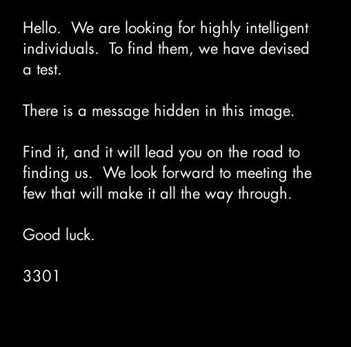
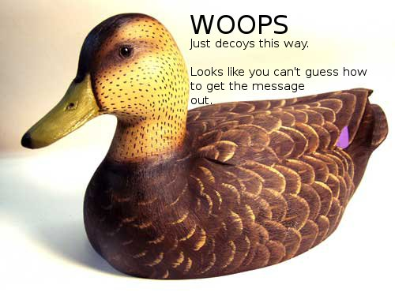

The first Cicada image: JPEG bytes, the duck and OutGuess
Reproduce the opening ASCII shift and hidden payload, inspect the original images, and follow the clue into the subreddit.
On this page
The opening Cicada image contains two different leads. One is readable text appended to the JPEG file; the other is an OutGuess payload embedded in the image data. Following the first lead explains how solvers found the tool needed for the second.

1. Inspect the file, not only the picture
JPEG images use an end marker, hexadecimal FF D9. In this archived file, text follows that marker. It invokes a Roman emperor and contains the encoded string lxxt>33m2mqkyv2gsq3q=w]O2ntk. Our byte-level report preserves the exact trailer and its offset. Finding appended text is different from extracting the OutGuess payload.
2. Shift character codes, including punctuation
Subtract four from every character’s ASCII value. The beginning lxxt>33 becomes http://: l → h, x → t, > → :, and 3 → /. A letters-only Caesar substitution would leave the punctuation wrong. The full output is the historical address http://i.imgur.com/m9sYK.jpg.
cipher = "lxxt>33m2mqkyv2gsq3q=w]O2ntk"
decoded = "".join(chr(ord(c) - 4) for c in cipher)
print(decoded)
assert "".join(chr(ord(c) + 4) for c in decoded) == cipherThe inverse check verifies the character transformation. It does not by itself show that a destination still exists or belongs to the original puzzle.
3. Read the duck as a clue to a tool

The contemporary solver account explains the wordplay linking the duck’s wording to OutGuess. The next operation is applied to the original opening JPEG. The duck is the instruction clue, not the carrier used for the reproduced extraction below.
4. Extract the second message from the original JPEG
outguess -r final.jpg extracted.txtOur fresh run of the existing clean guarded OutGuess build returned successfully and extracted 535 bytes, byte-for-byte equal to the separately archived payload. Its diagnostic reported seed 228 and length 535. The receipt records the executable hash and output hash; the guarded-build record documents that build’s provenance and limitations.
The message points to the subreddit a2e7j6ic78h0j and supplies 76 line-and-character coordinates. Download the fresh extracted bytes or the archived text. Matching these bytes confirms this extraction; it does not solve the later book code.
5. The next stage needs an ordered text
The coordinates are pointers into a text, not a self-contained cipher. The Mabinogion counting guide explains the subsequent decoding, post-order and spacing issues. A complete replay must preserve the ordered post list and each character lookup. Substituting an arbitrary modern edition or a current Reddit display order can change the result.
The dimensions become relevant later, after the telephone-stage instruction asks for three associated primes. All three values are prime, and 509 × 503 × 3301 = 845145127. The audit checks that arithmetic, but it should not be presented as the rule that decoded the appended string. It belongs to a later step in the 2012 route.
Reproduce these checks
Extract the reference-data ZIP with its folders intact. The standard-library command checks the preserved JPEG, trailer, dimensions, shift, prime arithmetic and stored payload comparison:
python scripts/replay_2012_opening.py --output opening-check.jsonTo perform a fresh extraction as well, supply your OutGuess executable. This is a separate dependency; it is not bundled with the reference data:
python scripts/replay_2012_opening.py --outguess /path/to/outguess --output opening-extraction.jsonEach command requires a new output filename. Without --outguess, the report explicitly says no extraction ran. Audit script · Source manifest.
Source and verification boundaries
The images and comparison payload come from a pinned artifact archive. The contemporary account supplies the solving context. Their opening-post dates differ, so this page does not infer an exact first-post timestamp from the archive’s filename or heading. The checked facts concern the preserved bytes. No historical phone number or domain was contacted, and no signature verification or complete subreddit replay is claimed.